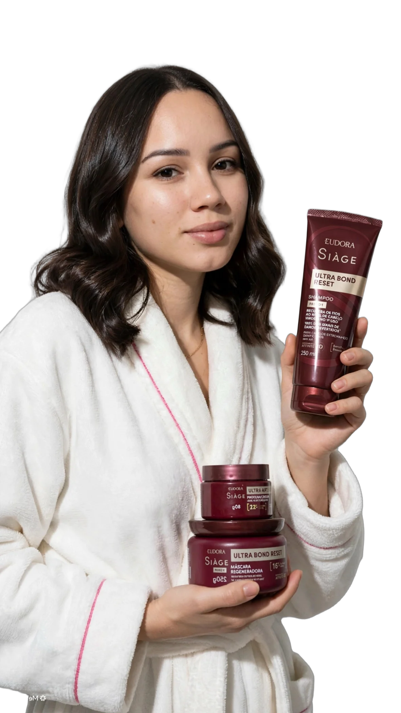

Criadora UGC Porto Velho, RO
Thais Linhares
Conteúdo que vira resultado de verdade
Vídeos autênticos, cheios de energia, do jeito que uma cliente real mostraria pra sua marca.
Fale comigo
Marcas
PARCEIRAS
Criadora UGC Porto Velho, RO
Conteúdo que vira resultado de verdade
Vídeos autênticos, cheios de energia, do jeito que uma cliente real mostraria pra sua marca.
Fale comigo